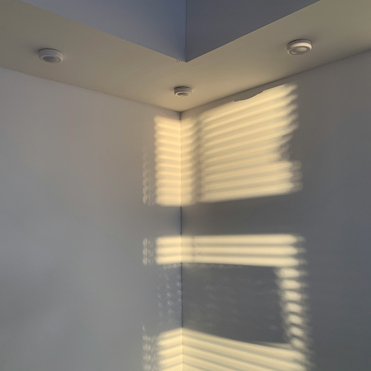
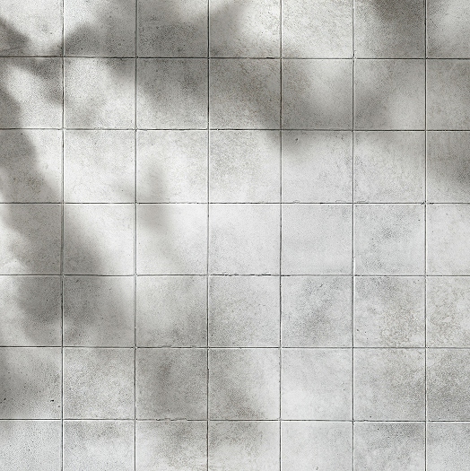
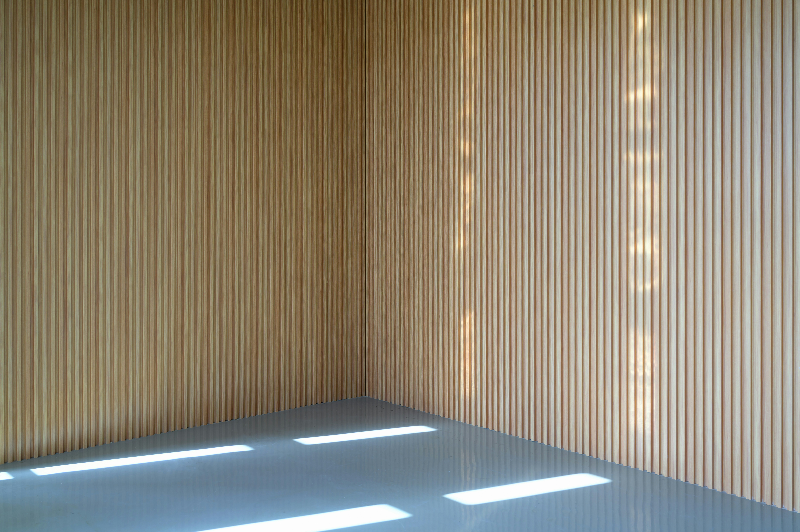

haku.
Design for calm mind
静けさに美しさは宿る
冷たいグレーの空間に、光が静かに重なっていく。
音も動きもほとんどないのに、空間だけはゆっくりと変化していく。
その移り変わりをただ見つめていると、
何もしていない時間がいちばん豊かに感じられる気がします。



冷たいグレーの空間に、光が静かに重なっていく。
音も動きもほとんどないのに、空間だけはゆっくりと変化していく。
その移り変わりをただ見つめていると、
何もしていない時間がいちばん豊かに感じられる気がします。


